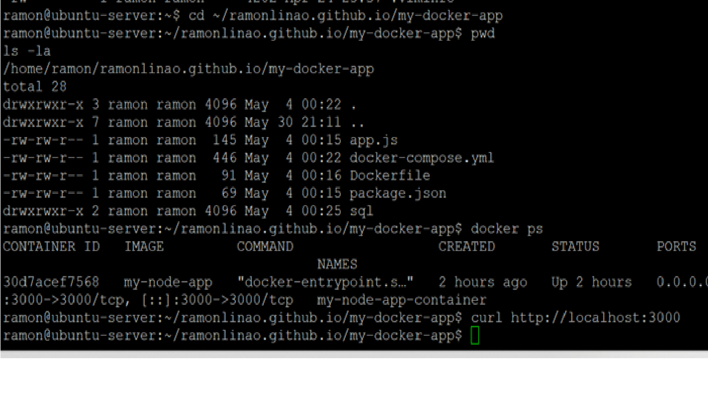

🐳 Dockerized Node.js Application
Built and deployed a containerized Node.js web application using Docker on Ubuntu Linux. Created a custom Dockerfile, built Docker images, configured port mapping, and managed container lifecycle operations. Verified deployment through command-line testing and browser-based access, demonstrating practical experience with Docker containerization and Linux-based application deployment.
